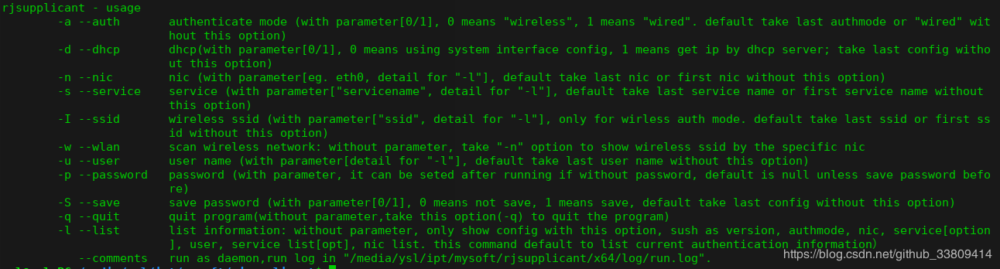
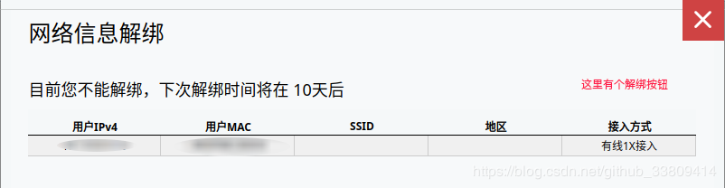

<!DOCTYPE html><html lang="en"><head><meta name="generator" content="Hexo 3.9.0"><meta charset="utf-8"><meta name="keywords" content="松林羊, ysl, songlinsheep, andus, blog, 个人站点, 个人网站"><meta name="description" content="松林羊的个人网站，用于记录，分享。欢迎交流^-^"><meta name="viewport" content="width=device-width,initial-scale=1,maximum-scale=1"><title> 锐捷Linux客户端连接校园网 | 松林羊</title><link rel="shortcut icon" href="/smile.ico"><link rel="stylesheet" href="/css/style.css"><link rel="stylesheet" href="/fancybox/jquery.fancybox.min.css"><script src="/js/pace.min.js"></script><script>!function(e,t,o,c,i,a,n){e.DaoVoiceObject=i,e[i]=e[i]||function(){(e[i].q=e[i].q||[]).push(arguments)},e[i].l=1*new Date,a=t.createElement(o),n=t.getElementsByTagName(o)[0],a.async=1,a.src=c,a.charset="utf-8",n.parentNode.insertBefore(a,n)}(window,document,"script",("https:"==document.location.protocol?"https:":"http:")+"//widget.daovoice.io/widget/0f81ff2f.js","daovoice"),daovoice("init",{app_id:"1559132c"}),daovoice("update")</script></head></html><body><main class="content"><section class="outer"><article id="post-锐捷Linux客户端连接校园网" class="article article-type-post" itemscope itemprop="blogPost" data-scroll-reveal><div class="article-inner"><header class="article-header"><h1 class="article-title" itemprop="name"> 锐捷Linux客户端连接校园网</h1></header><div class="article-meta"> <a href="/2018/12/17/锐捷Linux客户端连接校园网/" class="article-date"><time datetime="2018-12-17T12:22:21.000Z" itemprop="datePublished">2018-12-17</time></a><div class="article-category"> <a class="article-category-link" href="/categories/应用软件/">应用软件</a></div> &emsp;<i class="fe fe-bar-chart"></i> <span class="post-count">642</span>字 &emsp;<i class="fe fe-clock"></i> <span class="post-count">2</span>分钟</div><div class="article-entry" itemprop="articleBody"><blockquote><p>实验环境：<br>成都信息工程大学(航空港校区)<br>Deepin 15.8<br>RG_Supplicant_For_Linux_V1.31.zip</p></blockquote><ul><li><p>一、下载并解压。</p></li><li><p>二、进入解压后的目录(rjsupplicant.sh所在目录)，打开终端(Terminal)，执行</p><figure class="highlight plain"><table><tr><td class="gutter"><pre><span class="line">1</span><br></pre></td><td class="code"><pre><span class="line">sudo ./rjsupplicant.sh --help</span><br></pre></td></tr></table></figure><p><br>翻译如下：</p><pre>
  认证客户端 - 使用帮助
      -a --auth        认证方式(带参数，0表示无线认证，1表示有线认证；不指定时
                      采用上一次认证方式或者为有线认证)
      -d --dhcp        dhcp方式(带参数，0表示静态IP认证，1表示使用动态获取IP方
                      式认证；不使用-d默认使用上一次配置)
      -n --nic        认证网卡(参数为网卡名称(参考-l结果)，不指定时采用上一次
                      使用的网卡或者第一张网卡)
      -s --service        服务(参数为服务名称(参考-l结果)，不指定时采用上一次使用
                      的服务或者第一个服务)
      -I --ssid        无线认证ssid(参数为ssid名称(参考-l结果)，不指定时采用上
                      一次使用的SSID或者第一个SSID，无线认证有效)
      -w --wlan        扫描无线网络: 无参数，可使用-n指定无线网卡，查看无线网络
                      列表
      -u --user        用户名(参数为用户名，不指定时采用上一次使用的用户名)
      -p --password        密码(参数为密码，若未设定密码，运行程序后可重设定，默认
                      为空除非已经保存了密码)
      -S --save        保存密码(带参数，0表示不保存密码，1表示保存密码，不指定
                      时采用上一次配置)
      -q --quit        退出程序(不带参数，使用-q命令退出后台运行的客户端)
      -l --list        查看模式：无参数，指定该模式时，只查看信息，不认证。内容
                      包括：版本号，当前认证方式，当前网卡，当前服务(可选)，用
                      户名，服务列表(可选)，网卡列表。默认查看当前认证方式下信
                      息。
         --comments        后台运行方式，输出日志在"/home/steven/下载/rjsupplicant/
                      x64/log/run.log"中
</pre></li><li><p>三、解绑原MAC地址(如果没有请忽略)<br>进入校园网自助服务平台：<a href="http://10.254.241.18:8080/selfservice/" target="_blank" rel="noopener">http://10.254.241.18:8080/selfservice/</a> 我这里已经解绑过了。<br><br>如果没有这一步，在连接时可能报错，如提示用户欠费等。</p></li><li><p>四、连接网络<br> 根据自己情况设置连接参数。<br> -u 后跟的时用户名，一般是学号<br> -p 后跟的时密码</p><p></p><p><font color="red">提示，Terminal窗口关闭，网络也会断开！！</font></p></li></ul></div><footer class="article-footer"><ul class="article-tag-list"><li class="article-tag-list-item"><a class="article-tag-list-link" href="/tags/校园网/">校园网</a></li><li class="article-tag-list-item"><a class="article-tag-list-link" href="/tags/锐捷客户端/">锐捷客户端</a></li></ul><div style="text-align:center;color:#ccc;font-size:14px;margin-top:10px"> ------------- 本文结束&nbsp;<i class="fe fe-smile"></i>&nbsp;感谢您的阅读 -------------</div></footer></div><nav class="article-nav"> <a href="/2018/12/22/Linux-新建分区/" class="article-nav-link"><strong class="article-nav-caption">前一篇</strong><div class="article-nav-title"> Linux 新建分区</div></a> <a href="/2018/09/13/Redis第一次启动，SHUTDOWN时提示：-error-ERR-Errors-trying-to-SHUTDOWN-Check-logs/" class="article-nav-link"><strong class="article-nav-caption">后一篇</strong><div class="article-nav-title">Redis第一次启动，SHUTDOWN时提示： (error) ERR Errors trying to SHUTDOWN. Check logs.</div></a></nav><div class="comment_headling" style="margin-top:5rem"><font size="5"><i class="fe fe-comments"></i> 评论</font></div><div class="comment"></div><script src="https://cdn1.lncld.net/static/js/3.0.4/av-min.js"></script><script src="/js/Valine.min.js"></script><script type="text/javascript">GUEST_INFO=["nick","mail","link"],guest_info="nick,mail,link".split(",").filter(function(i){return-1<GUEST_INFO.indexOf(i)}),guest_info=0==guest_info.length?GUEST_INFO:guest_info,new Valine({av:AV,el:".comment",app_id:"fq4O7Xaf1cYDbADGellNEn6V-gzGzoHsz",app_key:"a626rNIHkVVk8tGBBCfaQjb9",placeholder:"记得留下你的昵称和邮箱...可以快速收到回复ヾﾉ≧∀≦)o",meta:guest_info,notify:!0,verify:!1,avatar:"monsterid",recordIP:!0,visitor:!1,lang:"zh-cn"})</script></article></section><footer class="footer"><div class="outer"><ul class="list-inline"><li>已分享 45 篇博文，累计 <span class="post-count">46.7k</span> 字</li><ul class="list-inline"><li><i class="fe fe-smile-alt"></i>&nbsp;访客数&emsp;<span id="busuanzi_value_site_uv"></span></li><li><i class="fe fe-bookmark"></i>&nbsp;文章访问量&emsp;<span id="busuanzi_value_page_pv"></span></li></ul></ul><ul class="list-inline"><li><span id="timeDate">载入天数...</span><span id="times">载入时分秒...</span></li><script>var now=new Date;function createtime(){var n=new Date("07/28/2019 10:02:00");now.setTime(now.getTime()+250),days=(now-n)/1e3/60/60/24,dnum=Math.floor(days),hours=(now-n)/1e3/60/60-24*dnum,hnum=Math.floor(hours),1==String(hnum).length&&(hnum="0"+hnum),minutes=(now-n)/1e3/60-1440*dnum-60*hnum,mnum=Math.floor(minutes),1==String(mnum).length&&(mnum="0"+mnum),seconds=(now-n)/1e3-86400*dnum-3600*hnum-60*mnum,snum=Math.round(seconds),1==String(snum).length&&(snum="0"+snum),document.getElementById("timeDate").innerHTML="已等候你 "+dnum+" 天 ",document.getElementById("times").innerHTML=hnum+" 小时 "+mnum+" 分 "+snum+" 秒"}setInterval("createtime()",250)</script><ul class="list-inline"><li>&copy; 2019-2019 松林羊</li><li>Theme <a href="https://github.com/zhwangart/hexo-theme-ocean">Ocean</a></li></ul></ul></div></footer></main><aside class="sidebar sidebar-specter"> <button class="navbar-toggle"></button><nav class="navbar"><div class="logo"> <a href="/"></a></div><ul class="nav nav-main"><li class="nav-item"> <a class="nav-item-link" href="/" target="_self">主页</a></li><li class="nav-item"> <a class="nav-item-link" href="/archives" target="_self">归档</a></li><li class="nav-item"> <a class="nav-item-link" href="/categories" target="_self">分类</a></li><li class="nav-item"> <a class="nav-item-link" href="/tags" target="_self">标签</a></li><li class="nav-item"> <a class="nav-item-link" href="/links" target="_self">友链</a></li><li class="nav-item"> <a class="nav-item-link">综合</a><ul class="nav nav-main nav2"><li class="nav-item li2"> <a class="nav-item-link-child" href="/resource" target="_self">资 源</a></li><li class="nav-item li2"> <a class="nav-item-link-child" href="/site" target="_self">网 站</a></li></ul></li><li class="nav-item"> <a class="nav-item-link">关于</a><ul class="nav nav-main nav2"><li class="nav-item li2"> <a class="nav-item-link-child" href="/me" target="_self">博 主</a></li><li class="nav-item li2"> <a class="nav-item-link-child" href="http://stars.andus.top/" target="_blank">记 录</a></li><li class="nav-item li2"> <a class="nav-item-link-child" href="/plan" target="_self">计 划</a></li></ul></li><li class="nav-item"> <a class="nav-item-link" href="http://resume.andus.top/" target="_blank">简 历</a></li><li class="nav-item"><a class="nav-item-link nav-item-search" title="搜索"><i class="fe fe-search"></i> 搜索</a></li></ul></nav><nav class="navbar navbar-bottom"><ul class="nav"><li class="nav-item"><div class="totop" id="totop"><i class="fe fe-rocket"></i></div></li><li class="nav-item"></li></ul></nav><div class="search-form-wrap"><div class="local-search local-search-plugin"> <input type="search" id="local-search-input" class="local-search-input" placeholder="Search..."><div id="local-search-result" class="local-search-result"></div></div></div></aside><script src="/js/jquery-2.0.3.min.js"></script><script src="/js/jquery.justifiedGallery.min.js"></script><script src="/js/lazyload.min.js"></script><script src="/js/busuanzi-2.3.pure.min.js"></script><script src="/fancybox/jquery.fancybox.min.js"></script><script src="/js/tocbot.min.js"></script><script>900<=document.body.clientWidth&&tocbot.init({tocSelector:".tocbot",contentSelector:".article-entry",headingSelector:"h1, h2, h3, h4, h5, h6",hasInnerContainers:!0,scrollSmooth:!0,positionFixedSelector:".tocbot",positionFixedClass:"is-position-fixed",fixedSidebarOffset:"auto"})</script><script src="/js/ocean.js"></script><script src="/js/andus.js"></script><script src="/js/love.js"></script><script>$("img:not(#andus-head-img)").each(function(){$(this).wrap('<a class="fancybox" data-fancybox="gallery" href="'+$(this).prop("src")+'"></a>')})</script><script src="/live2dw/lib/L2Dwidget.min.js?094cbace49a39548bed64abff5988b05"></script><script>L2Dwidget.init({model:{scale:1,hHeadPos:.5,vHeadPos:.618,jsonPath:"/live2dw/assets/haruto.model.json"},display:{superSample:2,width:150,height:300,position:"left",hOffset:0,vOffset:-20},mobile:{show:!1},react:{opacityDefault:.5,opacityOnHover:.2},log:!1,pluginJsPath:"lib/",pluginModelPath:"assets/",pluginRootPath:"live2dw/",tagMode:!1})</script></body>